Кепка или каска с козырьком вверх: жест мастера «всё на уровне», уверенность и рост. В каждом варианте есть зелёный луч нивелира, фирменная черта бренда. Знаки простые, без мелких деталей: их можно вышить на кепке и нанести на каску, кружку, машину бригады.
